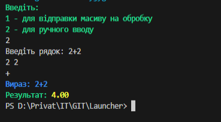
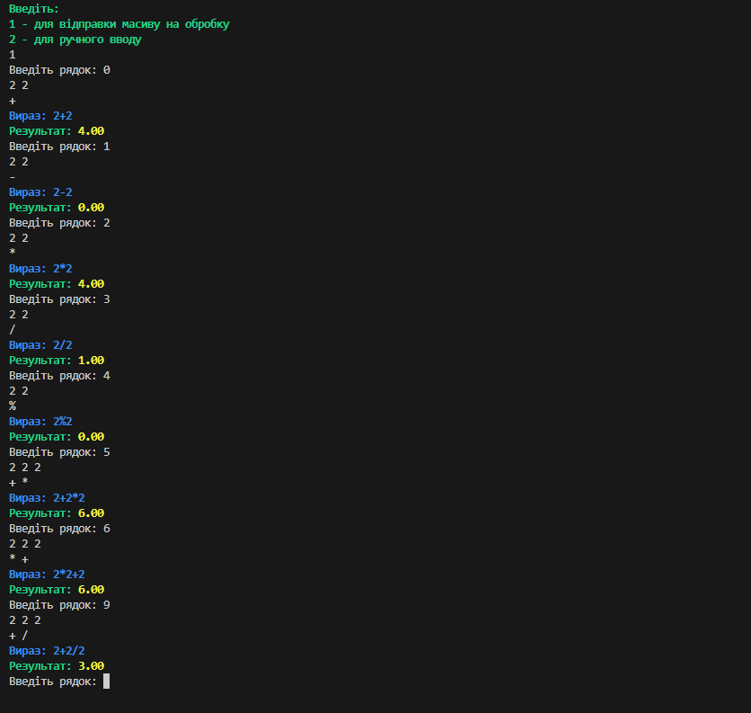
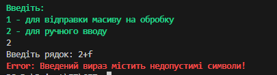

Лабораторна робота 2
16.02.2024
Варіант 5
1. Реалізувати клас TParser для обчислення арифметичного виразу, заданого текстовим рядком та назвами й значеннями змінних.
Клас повинен включати поле з текстовим представленням виразу та масив назв функцій і метод обчислення значення конкретної функції для заданого параметру, кількість значущих цифр після десяткової крапки.
Вираз може містити константи, змінні, арифметичні операції, та математичні функції (не менше 5).
Методи ініціалізації та зміни властивостей повинні виконувати перевірку на коректність вхідного параметру.
Метод обчислення значення виразу присвоює відповідь за вказаною адресою і повертає 0 при успішному обчисленні, або код помилки.
2. Реалізувати масив виразів, ініціалізувати вказану кількість елементів та порахувати суму значень виразів.
1 випадок

2 випадок

3 випадок
